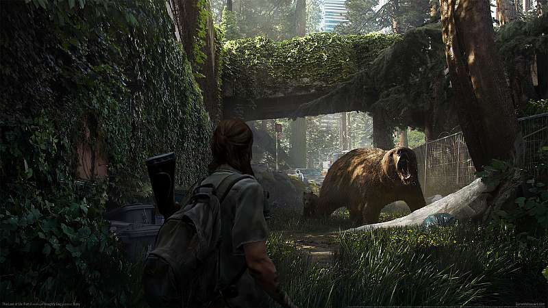

TPS (Third-Person Shooter) Tps oyunlar Third-Person Shooter açılımıyla yani üçüncü şahıs bakış açısı oyunlarıdır. Bu oyun türüne ismini veren olay karakterinizi dışarıdan üçüncü bir şahısın bakış açısından görüyormuş gibi bir kamera açısıyla oynamanızdan kaynaklanmaktadır. Genellikle de bu kamera açısı arkadan karakterinize bakan bir açıda olur. Onu diğer oyun türlerinden ayıran tek özellik kamera açısıdır. Bu tür oyunlara örnek verecek olursak eğer GTA (Grand Theft Auto), Resident evil serisi ve Tomb Raider Serisine örnek verebiliriz.

×